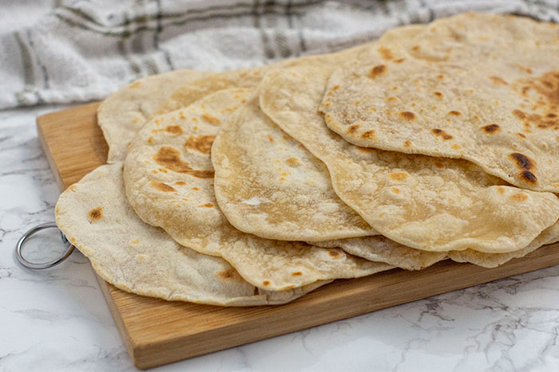

Taco Shells

Description
Recipe found on YouTube. (Simply Mama Cooks)
Makes 14 tortillas.
Ingredients
- 3 1/2 Cups - All Purpose Floud
- 2 TSP - Baking Powder
- 1 1/4 Cup - Hot Water
- 1/4 Cup - Oil
- 1 TSP - Salt
Steps
- Mix dry ingredients in mixing bowl.
- Add Oil and hot water to mixing bowl.
- Mix util moist and slightly tacky
- Knead 10-15 minutes, the dough should be smooth and soft.
- Rest 10-15 minutes
- Roll out tortilla